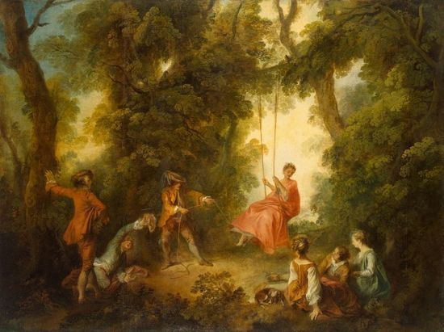

ARCADISMO
Século XVIII
O Arcadismo, também conhecido como Neoclassicismo, foi um movimento literário que surgiu no século XVIII, durante o período conhecido como Iluminismo. Caracterizado por uma reação ao Barroco, o Arcadismo buscava inspiração na simplicidade e na racionalidade dos clássicos greco-latinos.
Contexto histórico
O Arcadismo teve seu desenvolvimento no contexto do Iluminismo, uma época marcada pelo avanço do pensamento racional, pela valorização da ciência e pela crítica à sociedade feudal e ao absolutismo. Nesse período, a burguesia ganhou força e influência, e o ambiente cultural começou a valorizar a natureza, a razão e a simplicidade.
Características
O Arcadismo se caracteriza por uma linguagem simples, clara e objetiva, buscando uma harmonia entre a forma e o conteúdo. Os poetas árcades valorizavam a natureza, exaltando-a como um refúgio de paz e inspiração. O amor idealizado também era uma temática frequente, retratado de forma idealizada e distante da realidade. A influência dos clássicos greco-latinos era evidente, com a utilização de formas poéticas como a ode, a écloga e a elegia.
Autores do Arcadismo
Cláudio Manuel da Costa: Considerado o principal representante do Arcadismo no Brasil, foi autor de obras como "Obras Poéticas" e "Vila Rica". Sua poesia buscava a simplicidade, exaltava a natureza e criticava a opressão. Tomás Antônio Gonzaga: Conhecido pelo pseudônimo de Dirceu, Gonzaga escreveu a obra "Marília de Dirceu", que é um marco do Arcadismo brasileiro. Seus poemas líricos exaltam o amor idealizado e a natureza. Basílio da Gama: Autor de "O Uraguai", poema épico que narra a guerra entre espanhóis e índios guaranis, Gama explorou a temática histórica, exaltando o heroísmo e a luta pela liberdade.
